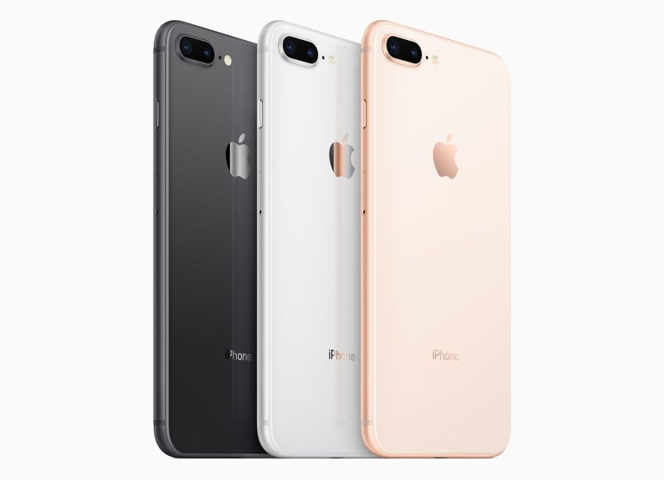

El Apple iPhone 8 Plus cuenta con una pantalla IPS LCD de 5,5", con resolución 1920x1080. Alcanza una densidad de píxeles de 401 ppp. El Apple iPhone 8 Plus corre la versión 11 de IOS. En cuanto a características técnicas, el procesador del Apple iPhone 8 Plus es un Apple A11 Bionic.
En el iPhone 8 Plus contamos con una cámara principal –o trasera- con una resolución de 12 MP. La cámara principal tiene Flash True Tone con cuatro LED. Es capaz de grabar vídeo UHD 4K MP. Además, contamos también con cámara frontal o secundaria , que tiene una resolución de 7 MP.
Ir a Inicio